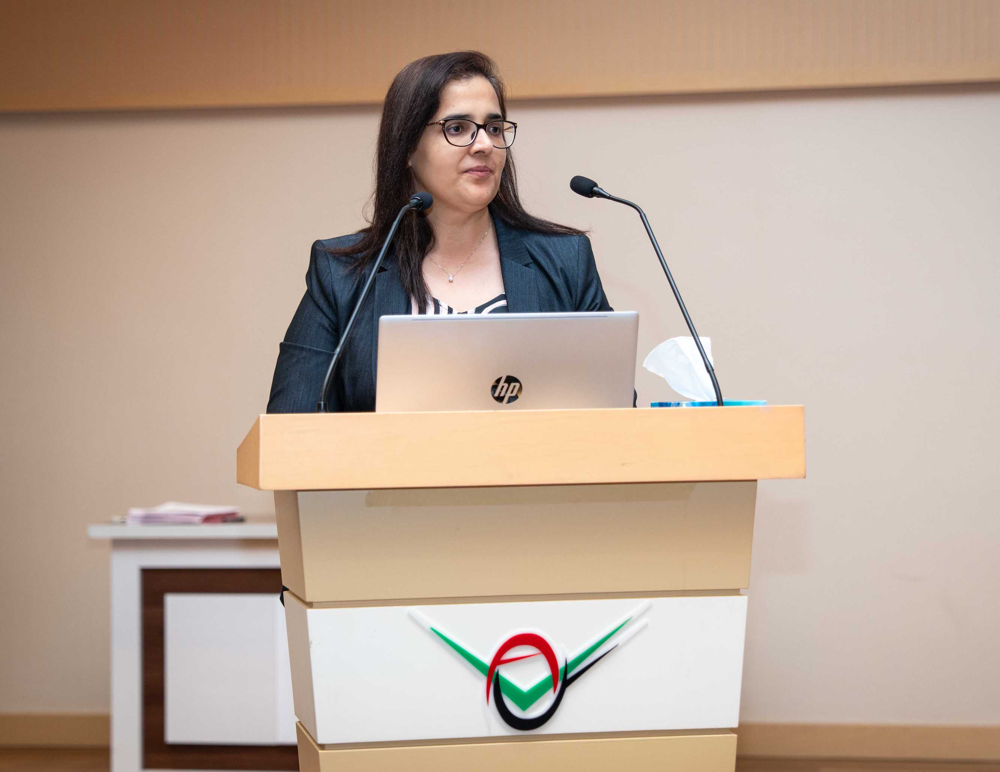
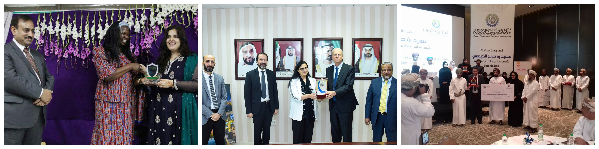
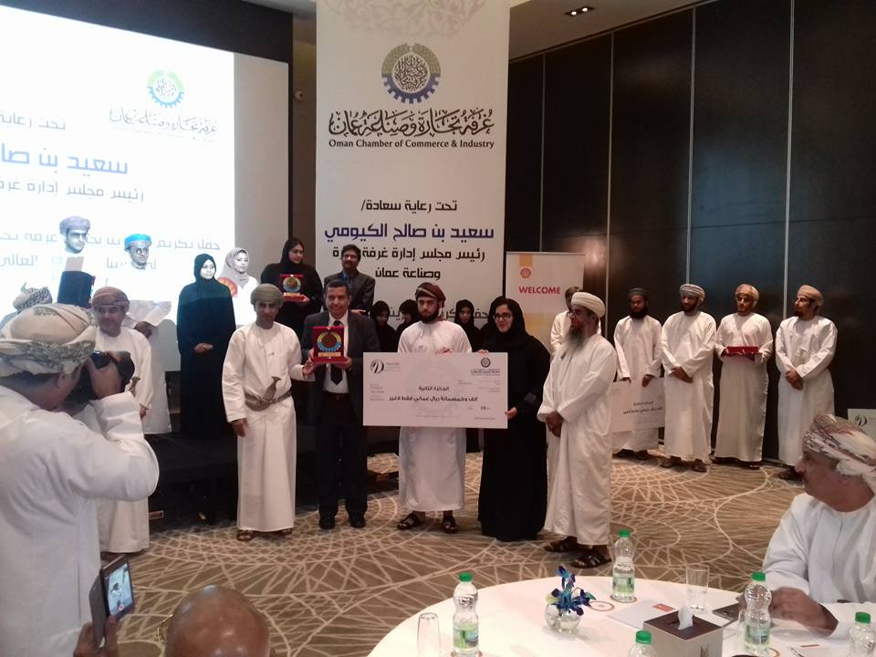
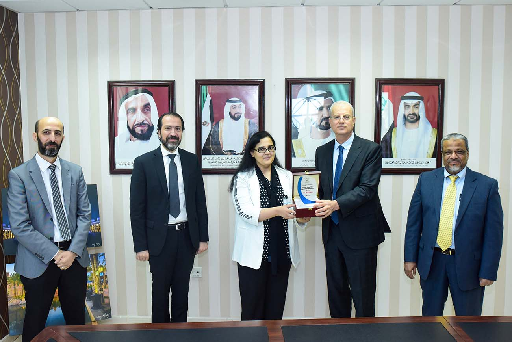
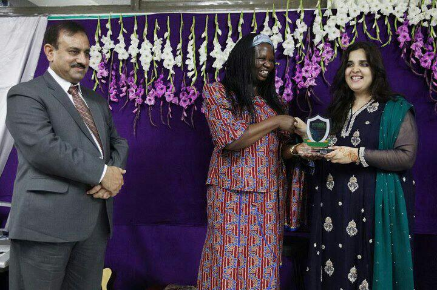

Associate Professor of Human Resource Management & Organizational Behavior | Deputy Dean, College of Business, Al Ain University
SFHEA | SHRM-SCP | CDEI™ | Certified Carbon Literate Educator | Co-Chair, PRME Global Women & Leadership Working Group
Dr. Iffat Sabir Chaudhry is an academic leader, researcher, educator, and advocate for responsible, inclusive, sustainable, and human-centered management. She is an Associate Professor of Human Resource Management and Organizational Behavior and Deputy Dean of the College of Business at Al Ain University, UAE. Internationally, she serves as Co-Chair of the UN Principles for Responsible Management Education (PRME) Global Women & Leadership Working Group (GWAL), contributing to global efforts to advance women’s leadership, inclusion, mentoring, and responsible management education.
With more than a decade of experience spanning academia, research, academic leadership, and community engagement across multiple countries, Dr. Chaudhry brings together scholarly rigor, pedagogical innovation, and practical leadership. She holds a Ph.D. in Management from the University of Hull, UK, and is currently pursuing an Ed.D. in Adult Learning and Higher Education at Oregon State University, USA. She is a Senior Fellow of the Higher Education Academy (SFHEA) and Senior Certified Professional (SHRM-SCP), and holds professional certifications in Global Diversity, Equity and Inclusion, Artificial Intelligence for HR, and Carbon Literacy Education. As a Certified Carbon Literate Educator through PRME and the University of Nottingham, she integrates climate literacy, sustainability, and responsible management principles into teaching, curriculum development, and academic leadership. Her work includes embedding the UN Sustainable Development Goals (SDGs) across business curricula, advancing AI-enabled HR education, and strengthening the connection between professional practice, sustainability, and responsible leadership. At Al Ain University, she founded the Women Leadership Forum, creating opportunities for leadership development, mentoring, and women’s empowerment aligned with SDGs 5, 8, and 10. Her contributions to community engagement have received institutional recognition through the Dean’s Award for Community Engagement.
Her research sits at the intersection of human-centered AI and digital transformation, HRM, organizational behavior and leadership, sustainability, diversity and inclusion, and higher education equity. Her scholarly contributions include Scopus, ABDC, ABS, and Web of Science-indexed publications, books, and book chapters, with active collaborations between academia and practice, including consultancy project recognized by the Oman Chamber of Commerce & Industry Award (2016). Her scholarship is complemented by a distinctive foundation in systems thinking and organizational cybernetics, developed through her doctoral research on emotional management using Stafford Beer’s Viable System Model. She currently serves as Director of Metaphorum, an international research and professional network advancing organizational cybernetics, systems thinking, complexity, governance, and organizational design. Through her research, teaching, academic leadership, and international engagement, Dr. Chaudhry seeks to develop purpose-driven, emotionally intelligent, ethically grounded, and digitally capable leaders who can navigate technological transformation without losing sight of human agency, equity, sustainability, and social responsibility.
Her work is guided by a simple principle: technology should enhance human potential, organizations should serve a meaningful purpose, and leadership should create value for both people and society.


Best Faculty Award 2012-2013 by Abasyn University Islamabad, Pakistan
Community Engagement Award 2020-2021 by Al Ain University, United Arab Emirates
2nd Best Project Award 2016 by Oman Chamber of Commerce & Industry Economic Research, Oman